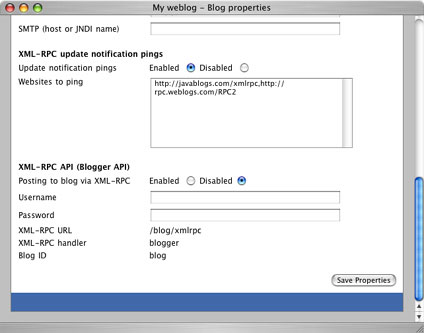

@header@

<table width="100%" cellspacing="0" cellpadding="8" class="item">
  <tr class="itemHeader">
    <td>
      XML-RPC Update Pings
    </td>
  </tr>
  <tr class="itemBody">
    <td>

      <p>
      Many blog aggregators support the notion of XML-RPC update notification pings that a blog can send when it has been updated. Examples of sites supporting this feature are <a href="http://www.weblogs.com">weblogs.com</a> and <a href="http://www.javablogs.com">javablogs.com</a>. To enable this in Pebble, click the <b>Blog properties</b> link after logging in. Towards the bottom of this page is a section entitled <b>XML-RPC update notification pings</b> where you can enable or disable the feature and specify a comma separated list of sites that should be pinged when you add/edit a blog entry.
      </p>

      <p>
      If this feature is enabled, an XML-RPC ping is automatically sent to each website you specified whenever a blog entry is added or edited.
      </p>

    </td>
  </tr>
</table>

@footer@